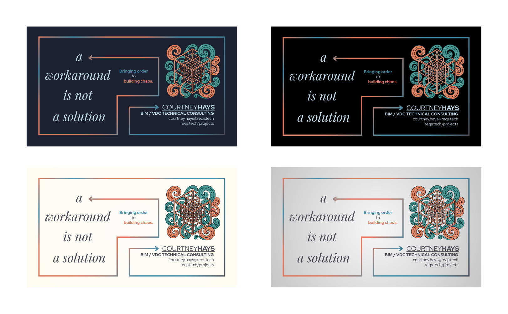

The back of the card set the tone for the entire brand identity—minimal, centered, and balanced. It showcases essential contact info in a deliberate structure, surrounded by generous whitespace. The horizontal line divides space and guides the eye, while the subtle shift between email and web address helps create rhythm.
One of the most deliberate choices was using cream (#FFFEE5) instead of pure white. Because the cards are designed to print on transparent or slightly tinted paper stock, stark white would have clashed visually or appeared too harsh. Cream softens the tone and creates a timeless, refined feel—while still maintaining contrast and clarity across print and screen.

Two front designs were explored with equal attention to structure, spacing, and personality. To avoid introducing bias or subtle signaling to the viewer, the images are presented without labels—allowing the design itself to speak. Both share the same core elements, but explore different treatments of type, contrast, and visual weight.

The first option leans into symmetry and subtle rhythm. The type is evenly spaced and visually centered, creating a calming, almost architectural feel. The dot in reqs.tech aligns with the spacing of the name, reinforcing a sense of deliberate precision. This version echoes themes of structure and quiet confidence.
The second option plays with motion and weight. It shifts visual gravity toward the name and opens up the space beneath. The placement of elements suggests movement or emergence—like something coming into focus. This version leans into approachability while still keeping things minimal.
Neither version is labeled because both have value depending on the impression you want to leave. One is more assertive, one more fluid—but both reflect the core values of reqs.tech: clarity, adaptability, and thoughtful design.